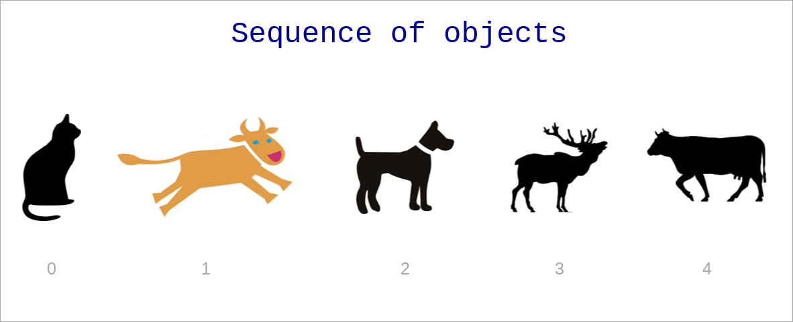

Python Built-in Data Types and Basic Operations
Created for
Created by

Data Types Introduction
Data Types Introduction
- Programming is about manipulating data
- Each programming language defines its data types and the corresponding operations which can be performed on each data type.
- In Python, each data type literal is represented internally as object
Numeric Data Types
Numeric Data Types
- In Python we can use integer, floating point and complex numbers
- Numbers are immutable data type!
- Most arithmetic operations are natively defined in Python.
- More complex math functions are defined in the math module
integer numbers
we can use positive and negative integers:
# positive integer literal:
>>> 42
42
>>> +42
42
# negative integer literal:
>>> -42
-42
floating point numbers
we can use positive and negative floating point numbers
>>> 3.1234
3.1234
>>> -0.255
-0.255
# leading zero can be skipped:
>>> .44
0.44
>>> -.55
-0.55
>>>
Underscores in Numeric Literals
- As of Python 3.6 you can use underscores in numeric literals to improve readability of long numbers
>>> 1_000_000 + 2_000_000
3000000
arithmetic operations
- Python supports the standard arithmetic operations:
- Numeric Types@python docs
The division operator "/" in python2 returns the integer part(i.e. works like Floor division), while in python3 it returns the float result
Example: arithmetic operations
>>> 5-3
2
>>> 5*3
15
>>> 5/3
1.6666666666666667
>>> 5//3
1
>>> 5%3
2
Example: python3 vs python2 division
>>> 5/3
1
>>> 5/3
1.6666666666666667
>>> 5//3
1
Python3 adds the "//" operator for Integer division
the math module
- math module is native to every python distribution.
- to use its functions you only have to import it in your program:
- math — Mathematical functions @python docs
import math
# do something with math
Built-in math functions
Example: math module methods
>>> import math
>>>
>>> math.pi
3.141592653589793
>>> math.floor(math.pi)
3
>>> math.pow(2,3)
8.0
>>> math.sqrt(9)
3.0
>>> math.ceil(2.9)
3
>>> math.ceil(2.1)
3
>>> math.floor(2.9)
2
>>> math.floor(2.1)
Example: math built-in functions
>>> round(2.51)
3
>>> round(2.49)
2
>>> max(1,2,3)
3
>>> min(1,2,3)
1
>>> abs(2-5)
3
Strings in Python
Strings in Python
definition
- Strings are immutable sequences of Unicode code points (will be discussed further).
- Single-line strings literal should be closed in single or double quotes
- No difference between single or double quoted strings!
- Multi-line strings literal should be closed in triple single or double quotes
Examples
>>> "this is a single line string"
'this is a single line string'
>>> 'another single line string with UTF charactes like 🍷'
'another single line string with UTF charactes like 🍷'
>>> 'but can not be spred in multiple lines
File "", line 1
'but can not be spred in multiple lines
^
SyntaxError: EOL while scanning string literal
Examples
>>> """infact you can -
... if you use these triple quotes"""
'infact you can - \nif you use these triple quotes'
>>> '''or these triple quotes
... can separate multiline without errors'''
'or these triple quotes\ncan separate multiline without errors'
Strings operations
Strings operations
concatenation: +
The operation is defined only on same data types, I.e. Python can not concatenate apples with oranges:
#string concatenation with '+':
>>> "ala" + "bala"
'alabala
>>> "1" + "2"
'12'
>>> "1" + 3
Traceback ...
TypeError: cannot concatenate 'str' and 'int' objects
repetition: *
One of the operands must be string, the other - integer
>>> "-" * 10
'----------'
>>> "1" * 10
'1111111111'
>>> ">hello<" * 3
'>hello<>hello<>hello<'
>>> "a" * "3"
Traceback ...
TypeError: can't multiply sequence by non-int of type 'str'
String Methods
# string methods:
>>> "ada".capitalize()
'Ada'
>>> "alabala".count("a")
4
>>> "Alabala".count("a")
3
>>> "AlabAla".find("a")
2
>>> "alabala".replace("a", "o")
'olobolo'
>>> "one,two,three".split(",")
['one', 'two', 'three']
What a method is will be discussed further, after the Functions topic!
For now, you can try to look at the docs: String Methods @docs.python.org
Variables/Value Names
Variables in Python
What is a variable in Python?
- A name (identifier) for "container" (placed in RAM) in which values can be stored and retrieved
- When we say that we set value in a variable, it should be understood as to write a value into the corresponding container.
- In Python we speak about name binding, when we assign a value to variable.
- We can get the variable value, i.e. to read the content of the corresponding container
A very simplified view of variables in RAM

Identifiers rules
- Variables names should follow next rules:
- Start with letter or underscore
- Followed by zero or more letters, underscores and digits
- Variable names are case-sensitive
- Identifiers and keywords @python docs
Naming Conventions
- Function names should be lowercase, with words separated by underscores as necessary to improve readability.
- Variable names follow the same convention as function names.
- mixedCase is allowed only in contexts where that's already the prevailing style (e.g. threading.py), to retain backwards compatibility.
- PEP 8 (Function and Variable Names)
example
x = 99
print("x = ", x)
first_name = "ada"
print("first_name = ", first_name)
print("first_name = ", First_name) #NameError: name 'First_name' is not defined
sur-name = "byron" #SyntaxError: can't assign to operator
Name binding
- Name binding is the association between a name and an a value
- Note, that all values in Python are represented as objects
- We can bind a value to a name with the
assignmentoperator (=) - We can check the unique identity of an object by the
id()built-in function. - CPython uses the object's memory address for the unique id
>>> a = 2
>>> id(a)
9413216
Name binding

Name binding
>>> a = 1
>>> b = 1
>>> id(a)
9413184
>>> id(b)
9413184
Name Binding
- Python reuses the immutable objects instead of creating copies
- That's true only for small immutable objects (implementation dependant, so don't rely on that)
# only one object will be created
>>> a = 1
>>> b = 1
>>> id(a)
9413184
>>> id(b)
9413184
# two objects will be created
>>> c = 1_000_000
>>> d = 1_000_000
>>> id(c)
140418111214320
>>> id(d)
140418111215440
Name binding
>>> a = 5
>>> b = 2+3
>>> c = b
>>> id(a)
9413312
>>> id(b)
9413312
>>> id(c)
9413312
- Note, that in memory there is exactly one object (id: 9413312, value:5) after execution of the above code.
Name binding - aliasing
- When the right-hand side of the assignment is an existing variable, Python did not create a new object, but gives that object another name, an alias.
>>> a = 1_000_000
>>> b = a
>>> id(a)
140418111916176
>>> id(b)
140418111916176
Garbage collection
>>> a = 5
>>> id(a)
9413312
# Now we create a new object, and bind it to 'a'
>>> a = 6
>>> id(a)
9413344
# the object [id:9413312, value:5] will be deleted by the garbage collector, as nothing points to it
Comments
Comments
Why to comment our code?
- Python interpreter ignores every part of a program, which is marked as a "comment"
- Comments are used to explain and/or summarize a part of our program in a more readable manner
- For debugging purposes - when we need fast to ignore a block of code
- For other meta information about the program (programme name, author, date, etc.)
- A well commented program is more readable and maintainable
How to comment our code?
- Single line comment:
# - every line which starts with
#(hash tag) is a comment and is ignored py Python interpreter
# this is a just a comment: no print("whatever") will happens
print("this will be printed, of course")
### a more semantic example for comment:
# check if a triangle with sides (3,4,5) is a Pythagorean:
print(3**2 + 4**2 == 5**2)
Reference
PEP8 - CommentsBoolean type
What?
- Most programming languages define a Boolean type, which represents the truth values of logic and Boolean algebra (named after George Boole).
- Boolean values in Python are used mainly in the Conditional Statements and Logical Operations.
The Boolean type
- The Boolean data type consists of only 2 values:
- True
- False
- Note, that these are not variables names, but values like 0 and 1!
>>> print( type(True) )
<class 'bool'>
>>> print( type(False) )
<class 'bool'>
What is True/False in Python?
True/False values for most of the build-in objects:
| Type: | =False | =True |
|---|---|---|
| any numeric type | 0 (zero) | everything else |
| string | "" | any non-empty string |
| sequences and collections | empty | any non empty |
Logical (Boolean) operators
| Operation | Result |
|---|---|
| x or y | if x is false, then y, else x |
| x and y | if x is false, then x, else y |
| not x | if x is false, then True, else False |
- and and or returns one of their operands. I.e. not necessary boolean type.
- not always returns boolean value
Examples
>>> True and False
False
>>> 0 and 1
0
>>> 0 or 1
1
>>> 1 or 0
1
>>> not 1
False
>>> not 0
True
Comparison operators
intro
- With Comparison Operations we can check if 2 or more values are equal or if a value is less than other, and so on.
- The result of a Comparison Operation is True/False
- Comparing objects of different types, except different numeric, will raise a TypeError in Python3! (Can not compare "apples" with "oranges")
>>> 2 < 1
False
>>> 2 < "1"
...
TypeError: '<' not supported between instances of 'int' and 'str
Notes on comparison - Python 2
- docs.python.org/2/ - Value comparisons:
"The operators <, >, ==, >=, <=, and != compare the values of two objects. The objects do not need to have the same type."
"The value of an object is a rather abstract notion in Python"
"The default behavior for equality comparison (== and !=) is based on the identity of the objects"
"The default order comparison (<, >, <=, and >=) gives a consistent but arbitrary order."
the operators
| Operation | Meaning |
|---|---|
< |
strictly less than |
<= |
less than or equal |
> |
strictly greater than |
>= |
greater than or equal |
== |
equal |
!= |
not equal |
is |
object identity* |
is not |
negated object identity* |
Objects identity will be discussed in the OOP part of the course.
examples
>>> i = 5
>>> i < 5
False
>>> i <= 5
True
>>> 9 < 1000
True
>>> "9" < "1000"
False
Note, the last example: "9" < "1000", the result is False, because strings are compared lexicographically.
lexicographical comparison
- Symbols are compared by their position (codepoint) according to the character code table used.
- First the first two items are compared, and if they differ this determines the outcome of the comparison.If they are equal, the next two items are compared, and so on, until either sequence is exhausted.
So, why "9" < "1000" returns False?
If we use the ASCII Codes Table, we see that the ASCII code point for "9" is 57, and for "1" - 49.
So, Python compares 57 < 49 and as the result is False it returns False for the whole expression
You can get the Unicode code point for a one-character string using the built-in ord() function
Comparison operator Chaining
- Comparison operators in Python can be chained, instead of combining them with logical 'and'
x = 5
# equivalent of: 0<x and x<10:
print(0<x<10)
Control Flow Statements
What?
- The Control Flow statements allows our program to react in one way, if some condition is True, or in another way, if it's False.
Normal Control Flow
Statements are executed one after another, as written in code.
{kind=link}
if statement
Syntax
{kind=link}
- Condition can be any expression, which could be evaluated to True/False
if condition :
block 1
In Python, to encompass the statements which forms a block, you do not need to put any braces, but each statement have to be indented with the same amount of spaces/tabs!
example
x = 42
if ( x % 2 == 0):
print("{} is an even number!".format(x))
example - align matters
if False :
print("Statement1")
print("Statement2")
print("Statement3")
- Statement1 and Statement2 forms a block, which will be executed, only if the condition is true. This is not the case in example above, that's why only Statement3 will be executed.
if - else statement
Syntax
if condition :
block 1
else :
block 2
Flow

example - even/odd number
x = 41
if (x % 2 == 0):
print("{} is an EVEN number!".format(x))
else:
print("{} is an ODD number!".format(x))
41 is an ODD number!
example - hello in BG
user_lang = "bg"
if user_lang == "bg":
print("Здравейте")
else:
print("Hello")
print("-" * 20)
Здравейте
--------------------
if - elif - else statement
Syntax
if c1 :
block 1
elif c2:
block 2
else:
block 3
- We can have more than one elif statement, as shown in next examples!
Flow
{kind=link}
example - multinational hello
user_lang = "it"
if user_lang == "bg":
print("Здравейте")
elif user_lang == "it":
print("Ciao")
elif user_lang == "en":
print("Hello")
else:
print("I do not speak your language!")
print("-" * 20)
Exercises
Task1: odd_or_even.py
- Write a program, which will print out for any integer number if it is odd or even.
Task2: BMI_by_categories.py
- Refine the BMI program form the (last lab)
- Ask the user to enter his/her weight_in_kilogram and height_in_meters
- Now, the output of your program should be the BMI category, corresponding to the BMI index (given in next slide)
BMI Categories
| BMI | Category |
|---|---|
| <= 18.5 | Underweight |
| 18.5–24.9 | Normal |
| 25–29.9 | Overweight |
| >= 30 | Obesity |
Task3: guess_the_number.py
- Write a simple Python program, implementing the "Guess the number" game, following the rules:
- The program will "think" of a number using the
random module, as shown in code shown in next slide. - You have to implement now only the first user move:
- Prompt the user for his/her guess
- If the user guess is equal to the machine number => print out a congratulation message!
- If the user guess is less than the machine number => print out "your guess is less than my number. Try again!"
- If the user guess is greater than the machine number => print out "your guess is greater than my number. Try again!"
How to generate "machine_number"
from random import randint
machine_number = randint(1,10)
print("machine_number={}".format(machine_number))
### your code goes bellow:
Loops in Python
What are loops (cycles)
- Loops are control statements which allows a block of code to be executed multiple times.
- This repetition of a code can be fixed number of times (for loop) or while some condition is fulfilled (while loop).
- Each execution of the code, during the loop, is called an iteration!
while loop
while loop
Syntax
while condition :
block
- The block will be executed while the condition is True!
- Inside the block we have to change the variable used in condition to prevent an endless loop. Or we can use
breakstatement (discussed further)
Flow

Simple example
i = 1
while i<=5 :
print(i)
i += 1
1
2
3
4
5
This is just a simple example. For fixed numbers of times loops, it is better to user for with range loop, which will be discussed next
Example: endless loop (find the problem)
If you run next code, your Python will run an endless loop. Use CTRL+C or CTRL+Z to stop it
# print the numbers from 10 to 1:
i = 10
while i>=1 :
print(i)
i = 1
Example - proper use case of while
While loop is suitable, when we do not know in advance the number of iterations needed
# ask user to enter a name (string), until it contains at least 3 symbols
# the len function on string returns the number of symbols in a string
user_name = input("Enter a name, please: ")
user_name_length = len(user_name)
while user_name_length < 3:
user_name = input("Enter a name (at least 3 symbols): ")
user_name_length = len(user_name)
print("Thank you, {}!".format(user_name))
Example: sum all numbers in [1..100]
i = 1
sum = 0
while i <= 100:
sum += i
i += 1
print("sum = ", sum)
sum = 5050
Same task is better to be implemented with for loop!
Task: sum even numbers in [1..100]
- Modify the previous example, but calculate the sum only of the even numbers in the given interval [1..100]
sum = 2550
for loop
for loop
Syntax
for item in sequence :
#do something with item
- Python
forstatement is different than the "C-based"forloops in other popular languages (C#, Java, PHP, JavaScript) - In Python,
forstatement iterates over the items of any sequence. - This is common to
foreachloop concept in above-mentioned languages
Flow
{kind=link}
Simple example 1
Iterate over symbols in string:
for s in "ada":
print(s.capitalize())
A
D
A
Simple example 2
Iterate over list of numbers:
for num in [1,2,3,4]:
print(num)
1
2
3
4
Nested for loops
for i in [1,2,3]:
for j in "abv":
print(j)
print("\n") #prints new line
- More examples and real-world usage of the
forstatement will be shown in Sequence data types theme!
break statement
break statement
Syntax in while loop
while condition:
block 1
if break_cond:
break # loop is terminated, block 2 is skipped
block 2
Syntax in for loop
for item in sequence :
block 1
if break_cond:
break # loop is terminated, block 2 is skipped
block 2
Flow

Example - Output letters in a string, until 'i' letter is reached
str = "alibaba"
for s in str:
if s == "i": break
print(s)
a
l
do-while emulations
Python did not have do-while loop, as in other languages (reason: The Zen of Python)
General structure of a do-while loop:
do {
loop block
} while (condition);
But it can be easily emulated if needed
while True:
# loop block
if (condition): break
Example - do-while emulation with break
# ask user to enter a name (string), until it contains at least 3 symbols
while True:
user_name = input("Enter a name (at least 3 symbols): ")
user_name_length = len(user_name)
if user_name_length > 3: break
print("Thank you, {}!".format(user_name))
switch-case statement emulation
- If you need a kind of "switch-case" functionality, you can do it with multiple
elif - breakblocks
# print program menu:
print("Select an action:")
print("1. Action 1")
print("2. Action 3")
print("3. Action 3")
while True:
user_choice = int(input("Enter a number [0-4]: "))
if user_choice == 1:
print("Actin 1 fired!")
break
elif user_choice == 2:
print("Actin 2 fired!")
break
elif user_choice == 3:
print("Actin 3 fired!")
break
else:
pass
Another way is to use Python dictionaries, which will be discussed further.
Task: prompt user to enter at least 3 symbols long user name
- Implement a program, which will asks the user for a user name with at least 3 symbols in it.
- Bellow is the desired output
Enter your user name (at least 3 symbols):
*** At least 3 symbols, please! Try again.
Enter your user name (at least 3 symbols): ad
*** At least 3 symbols, please! Try again.
Enter your user name (at least 3 symbols): ada
Nice, your user_name is: ada
continue statement
continue statement
- Returns the control to the beginning of the loop.
- code after continue will be skipped.
- Usually, continue statement is dependent on some condition.
Syntax in while loop
while condition:
block 1
if continue_cond:
continue # go to while condition
block 2
Flow
{kind=link}
Example - print all numbers in [1..5], but skip 3
for i in [1,2,3,4,5]:
if i == 3:
continue
print(i)
1
2
4
5
Example - print symbols in a string, excluding vowels:
str = "alabala"
for s in str:
if s in ["a", "e", "i", "o", "u", "y"]:
continue
print(s)
l
b
l
Exercises
HW
"Guess the number" - full version
- Write the full version of the "Guess the number" game, implementing the same rules as given in Guess the number game - the beginning, but giving the user the chance to try more than once.
- The user now will have 5 tries to guess.
- If he/she could not manage to guess the number for 5 tries, the game stops, with a message:
"You lost! My number was X" - where X is the machine number
"Guess the number" - solutions
- a solution with while loop
- guess_the_number_while_loop.py
- a solution with for loop
- guess_the_number_for_loop.py
Sequence Data Types
(Basic data structures)
Sequence Data Types - Overview
Sequence Data Types - Overview
What is a Sequence?
A sequence in Python is a container, storing ordered collection of objects.
{kind=link}
What is a Sequence?
- The position number of an item in a sequence is called index.
- Indexes starts counting from 0.
- All sequence data type in Python supports common sequence operations.
length, indexing, slicing, concatenation,.
repetition, membership test, min, max, count, index- Each sequence data type has also own methods for performing specific operations.
What is a Sequence?

What is a Sequence? - examples
# list:
fruits = ["apple", "banana", "strawberry", "banana", "orange"]
# tupple:
point3d = (4, 0, 3)
# range:
digits = range(0,10)
# string:
user_name="ada byron"
- The Sequence Data Types in Python are:
- Lists.
- Tuple.
- Range.
- Strings are also considered as a sequence.
Lists
Lists
What is a List?
- A list is a mutable (i.e. changeable) sequence of objects.
- we can add or delete elements to the list.
- Lists, being mutable sequence, can grow or shrink.
- There is no restriction of the type of the objects being in a list.
- The objects in a list can repeat many times.
- Lists are general-purpose data structure.
Create list by literal
- A List literal is denoted by a square brackets
- Items in the list are separated by comma
### create empty list:
empty_list = []
### create list of numbers:
users = [1,2,3,4,5]
### create list of lists
matrix = [
[1,2,3],
[4,5,6],
[7,8,9]
]
Retrieve item from list
var_name = list_name[index]
### create list:
fruits = ["apple", "banana", "strawberry", "banana", "orange"]
### retrieve the first item in the list:
item1 = fruits[0]
# apple
### retrieve third item in the list.
item3 = fruits[2]
# strawberry
# retrieve last item in the list:
itemN = fruits[-1]
# orange
We will discuss more indexing operation in Common Sequence Operations.
Change list item
list_name[index] = value
### create list:
fruits = ["apple", "banana", "strawberry"]
### Change second list item
fruits[1] = "plum"
print( fruits )
# ['apple', 'plum', 'strawberry']
### Change last list item
fruits[-1] = "orange"
print( fruits )
# ['apple', 'plum', 'orange']
Tuples
Tuples
What is a Tuple?
- A tuple is immutable (i.e. not changeble) sequence of data.
- once created a tuple can not be changed! No grow or shrink can happens.
- Useful for fixed data.
- Tuples are faster than lists and consumes less memory, but they are not general-purpose.
Create tuple from literal
- Tuple literal is denoted by parentheses
- Items in the tuple are separated by comma
### create empty tuple:
empty = ()
print( empty )
# ()
### create tuple with one element - note the trailing comma!
# if you write t = (99), t will be an integer, not tuple
t = (99,)
print(t)
# (99,)
### create tuple of 3 elements:
point3d = (4, 0, 3)
print(point3d)
# (4, 0, 3)
Retrieve item from tuple
var_name = tupple_name[index]
### retrieve tuple items
address = ('Bulgaria', 'Sofia', 'Nezabravka str', 14)
country = address[0]
town = address[1]
street = address[2]
street_num = address[3]
print(country, town, street, street_num)
# Bulgaria Sofia Nezabravka str 14
Change tuple? No Way!
- Tuples are immutable and can not be changed!
### change a tuple item:
address[0] = "France"
# TypeError: 'tuple' object does not support item assignment
Examples
### create tuple with 3 elements:
ada_birth_date = (10, "December", 1815)
# retrieve tuple elements:
ada_birth_day = ada_birth_date[0]
ada_birth_month = ada_birth_date[1]
ada_birth_year = ada_birth_date[2]
print("Ada is born on {} {} in {}".format(ada_birth_month, ada_birth_day, ada_birth_year))
# Ada is born on December 10 in 181
Range Object
Range Object
What is a Range Object?
- The range type represents an immutable sequence of numbers.
- It's used to generate a number sequence, limited between pre-given start and stop integer values.
- It's typical use in Python is with
forloops. - Reference: ranges @python3 docs
Syntax
range(stop)
range(start, stop[, step])
- start is optional and if omitted defaults to 0
- step is optional and if omitted defaults to 1.
- start, stop and step must be integers!
- step can't be 0 (or "ValueError" is raised)
- The range of generated integers will end at stop - 1.
- If the given arguments did not form a sequence, an empty sequence will be returned.
Examples
range(0,10)
# generates the sequence: [0, 1, 2, 3, 4, 5, 6, 7, 8, 9]
range(10)
# same as above
range(2, 10, 2)
# generates the sequence: [2, 4, 6, 8]
range(9, -1, -1)
# generates the sequence: [9, 8, 7, 6, 5, 4, 3, 2, 1, 0]
range(-3, 4)
# generates the sequence: [-3, -2, -1, 0, 1, 2, 3]
range(9, -1, 1)
# incorrect sequence formulae, will return empty sequence
Range in for: example 1
### iterate from 0 up to 10, step = 1 (default)
for i in range(10):
print(i, end=" ")
# 0 1 2 3 4 5 6 7 8 9
Range in for: example 2
### iterate from 10 up to -1, step = -1
for i in range(10,-1, -1):
print(i, end=" ")
# 10 9 8 7 6 5 4 3 2 1 0
Range in for: example 3
### iterate from 2 up to 10, step = 2
for i in range(2, 10, 2):
print(i, end=" ")
# 2 4 6 8
Range in for: example 4
### iterate from -10 up to 0, step = 2
for i in range(-10, 0, 2):
print(i, end=" ")
# -10 - 8 - 6 - 4 - 2
These slides are based on
customised version of
framework